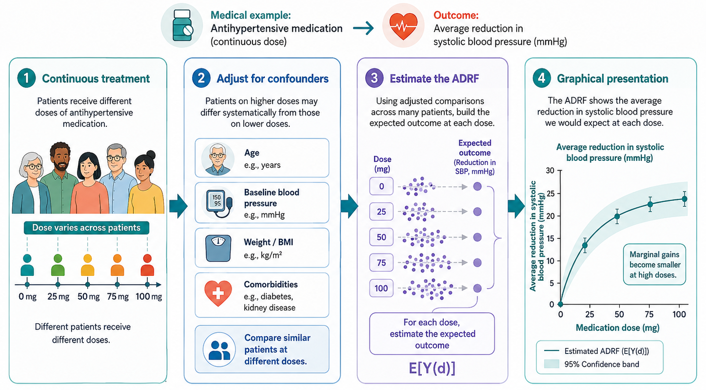

14 Continuous Treatments
Most methods in this book have been introduced using a binary treatment. A unit is either treated or untreated. A firm either receives a subsidy or does not. A municipality either opens a nursery school or does not. A region either crosses an eligibility threshold or does not.
This binary representation is useful and often realistic. Many policies are indeed organized around access: receiving the programme, being eligible for a benefit, or being exposed to a reform. But in many applications, treatment is not simply a yes-or-no variable. Units may receive different amounts, intensities, or doses of the same policy.
For example, firms may receive different subsidy amounts. Regions may receive different amounts of EU Structural Funds per capita. Schools may receive different numbers of additional teachers. Patients may receive different drug dosages. Municipalities may experience different levels of exposure to an environmental shock.
In these cases, the question is not only whether the policy works. The question is also how the effect changes with the intensity of treatment.
With continuous treatments, causal inference studies how outcomes change as the dose or intensity of treatment changes.
14.1 From Binary Treatment to Treatment Intensity
In the binary case, each unit has two potential outcomes:
\[ Y_i(1) \quad \text{and} \quad Y_i(0). \]
With a continuous treatment, the treatment can take many values. Let \(T_i\) denote the treatment intensity received by unit \(i\). For each possible treatment level \(t\), unit \(i\) has a potential outcome:
\[ Y_i(t). \]
The observed outcome is
\[ Y_i^{obs}=Y_i(T_i). \]
As usual, we observe only one potential outcome for each unit: the one corresponding to the dose actually received. All other potential outcomes are counterfactual.
This is the continuous-treatment version of the fundamental problem of causal inference. The difference is that the missingness problem is now richer. Instead of missing one counterfactual outcome, we are missing the full schedule of potential outcomes over all treatment levels not received.
14.2 Why Continuous Treatments Matter
Discretizing a continuous treatment into a binary variable can be convenient, but it often throws away important information.
Suppose a policy provides public subsidies to firms. A binary analysis compares subsidized firms with non-subsidized firms. This can answer whether access to the policy matters. But it cannot answer whether larger subsidies produce larger effects, whether the impact flattens after a certain amount, or whether very high subsidies become inefficient.
The same issue arises in regional policy. EU regional funds are often distributed with highly heterogeneous intensity across eligible regions. Treating all supported regions as equally treated ignores potentially large differences in the amount of treatment received (Becker et al. 2012; Cerqua and Pellegrini 2018).
Continuous-treatment analysis is therefore useful when the policy question concerns how much treatment should be provided, not only whether treatment should be provided.
14.3 The Dose-Response Function
The central object in continuous-treatment analysis is the average dose-response function (ADRF). It describes how the expected potential outcome changes with treatment intensity.
The ADRF is
\[ \mu(t)=E[Y_i(t)]. \]
For each treatment level \(t\), \(\mu(t)\) gives the average outcome that would be observed if all units received dose \(t\).
The causal effect of increasing treatment from \(t_0\) to \(t_1\) can be written as
\[ \mu(t_1)-\mu(t_0). \]
If the treatment is continuous, we may also be interested in the marginal effect of treatment intensity:
\[ \frac{\partial \mu(t)}{\partial t}. \]
This derivative describes how the expected outcome changes for a small increase in the dose.
The average dose-response function (ADRF) answers the question:
What would the average outcome be if all units received a given level of treatment intensity?
An ADRF may be increasing, decreasing, flat, or nonlinear. For example, subsidies may increase firm employment at low levels of support but have little additional effect after a certain threshold. In that case, the policy may have diminishing returns.

14.4 The Policy Question
Continuous treatments shift the policy question from access to intensity.
With a binary treatment, we usually ask:
What is the effect of receiving the policy?
With a continuous treatment, we may ask:
What is the effect of receiving a larger dose of the policy?
or:
Is there an optimal level of treatment intensity?
This distinction is important for policy design. If the dose-response function flattens after a certain point, additional resources may have low marginal returns. If the function is strongly increasing, increasing the dose may be justified. If it is non-monotonic, too much treatment may even reduce effectiveness.
14.5 Why Continuous Treatments Are Difficult
Continuous-treatment evaluation is difficult because treatment intensity is often endogenous.
In many policies, the dose is not randomly assigned. Firms receiving larger subsidies may have larger projects, stronger administrative capacity, better political connections, or more severe constraints. Regions receiving more funds may differ systematically from regions receiving less. Patients receiving higher doses may have more severe baseline conditions.
Therefore, units receiving different treatment intensities are usually not directly comparable.
The fact that two units are both treated does not mean they are comparable. Units receiving different doses may differ in ways that also affect their outcomes.
This is why estimating a dose-response function is not simply a matter of plotting outcomes against treatment intensity. A raw regression of \(Y_i\) on \(T_i\) compares different populations at different treatment levels. It may reflect selection into dose rather than the causal effect of dose.
14.6 Identification Assumptions
The most common identification strategy for continuous treatments extends selection-on-observables methods to the case of many possible treatment levels.
The key assumption is a continuous-treatment version of the Conditional Independence Assumption. For every treatment level \(t\), potential outcomes are independent of the actual treatment received after conditioning on observed pre-treatment covariates:
\[ Y_i(t) \perp T_i \mid X_i \quad \text{for all } t. \]
This is often called weak unconfoundedness (Hirano and Imbens 2004).
The intuition is the same as in matching and propensity score methods. After controlling for observed characteristics, units receiving different treatment intensities should be comparable. In other words, among units with similar covariates, variation in treatment intensity should be as good as random.
This is a strong assumption. It requires that all variables affecting both treatment intensity and potential outcomes are observed and correctly accounted for.
14.7 Overlap With Continuous Treatments
Continuous treatments also require an overlap condition. For each relevant value of the covariates, there must be enough variation in treatment intensity.
In practical terms, this means that we need similar units receiving different treatment levels. If all small firms receive low subsidies and all large firms receive high subsidies, it is difficult to separate the effect of subsidy intensity from the effect of firm size.
The overlap problem is often more severe with continuous treatments than with binary treatments. In the binary case, we need comparable treated and untreated units. In the continuous case, we need comparable units across a range of treatment intensities.
With continuous treatments, common support means not only having treated and untreated units. It means having comparable units observed at different dose levels.
When overlap is weak, the estimated dose-response function may rely heavily on extrapolation. This is especially problematic at very low or very high treatment levels, where few comparable units may be available.
14.8 The Generalized Propensity Score
The propensity score was originally introduced for binary treatments (Rosenbaum and Rubin 1983). Hirano and Imbens extend this idea to continuous treatments through the generalized propensity score, or GPS (Hirano and Imbens 2004).
In the binary case, the propensity score is the probability of receiving treatment conditional on covariates. In the continuous case, the GPS is the conditional density of the treatment level actually received:
\[ r(t,x)=f_{T\mid X}(t\mid x). \]
For unit \(i\), the GPS evaluated at the observed treatment level is
\[ R_i = r(T_i,X_i). \]
The GPS summarizes how likely it is for a unit with characteristics \(X_i\) to receive treatment intensity \(T_i\).
The key result is that, under weak unconfoundedness, adjusting for the GPS can help remove confounding due to observed covariates when estimating the dose-response function.
14.9 Estimating the Dose-Response Function With GPS
A typical GPS analysis proceeds in two stages.
First, estimate the treatment model. This means modeling the distribution of treatment intensity conditional on pre-treatment covariates:
\[ T_i \mid X_i. \]
This step produces an estimate of the generalized propensity score:
\[ \widehat{R}_i=\widehat{r}(T_i,X_i). \]
Second, estimate the outcome model as a function of treatment intensity and the GPS:
\[ E[Y_i \mid T_i=t, R_i=r]. \]
The estimated model is then used to predict potential outcomes at different treatment levels for the same population of units. Averaging these predicted potential outcomes gives the estimated dose-response function.
This distinction is important. A naive regression curve compares different units observed at different treatment levels. A GPS-adjusted dose-response function aims to compare the same population under alternative treatment intensities.
- Model treatment intensity using pre-treatment covariates.
- Use the generalized propensity score to adjust the outcome model and recover the dose-response function.
Bia and Mattei use the GPS to study how different amounts of financial aid affected employment among firms in Piedmont, estimating separate dose-response functions for small and larger firms (Bia and Mattei 2012).
14.10 Beyond the Standard GPS
The GPS approach is powerful, but it relies on modeling choices that may be restrictive. Researchers must specify a treatment model and an outcome model. If these models are misspecified, the estimated dose-response function may be biased.
Recent work has therefore developed methods that focus more directly on balancing covariates across treatment intensities. One example is entropy balancing for continuous treatments (Tübbicke 2022). Another is the use of independence weights, which aim to make the treatment independent of observed covariates after weighting (Huling et al. 2024).
The common idea is to reduce dependence between treatment intensity and pre-treatment covariates without relying entirely on a parametric model for the treatment assignment process.
These approaches are part of a broader movement toward more flexible methods for continuous treatments. However, they do not remove the core identification problem. If important confounders are unobserved, weighting and balancing methods cannot recover the causal dose-response function by themselves.
14.11 Diagnostics and Validity Checks
A continuous-treatment analysis should report more than the estimated dose-response curve.
First, the researcher should inspect the distribution of treatment intensity. If most observations are concentrated in a narrow range, the dose-response function outside that range will be weakly supported.
Second, common support should be assessed. The analysis should show whether comparable units exist at different treatment levels.
Third, covariate balance should be checked across the treatment distribution. The goal is not only to balance treated and untreated units, but to reduce the association between treatment intensity and pre-treatment covariates.
Fourth, the dose-response function should be reported with uncertainty bands. The curve may look smooth, but estimates at extreme treatment levels may be very imprecise.
Fifth, researchers should test sensitivity to alternative specifications of the treatment model, outcome model, and dose range.
Before interpreting the shape of the dose-response function, check whether the data actually contain comparable units at low, medium, and high treatment intensities.
14.12 Common Mistakes
The first mistake is to convert a continuous treatment into a binary treatment without a substantive reason. This may hide important variation in treatment intensity.
The second mistake is to interpret a raw regression of outcomes on treatment intensity as causal. Units receiving different doses are often selected in different ways.
The third mistake is to estimate the dose-response function in regions with little support. This creates extrapolation disguised as causal inference.
The fourth mistake is to focus only on whether the curve is increasing or decreasing, without considering uncertainty. Apparent nonlinearities may be driven by noise.
The fifth mistake is to ignore the policy margin. Sometimes the relevant question is not the effect of moving from zero to a very high dose, but the effect of increasing the dose within the range where policymakers can realistically act.
14.13 Worked Example
Suppose a government provides public subsidies to firms to reduce workplace accidents. A binary analysis would compare firms that receive a subsidy with firms that do not.
But the policy may provide different subsidy amounts. Some firms receive a small grant for basic safety equipment. Others receive a larger grant for major workplace redesign. A continuous-treatment analysis would ask how accident rates change as subsidy intensity increases.
Let \(T_i\) be the subsidy amount per worker. The dose-response function is
\[ \mu(t)=E[Y_i(t)], \]
where \(Y_i(t)\) is the accident rate that firm \(i\) would have under subsidy intensity \(t\).
If the dose-response function declines sharply at low subsidy levels and then flattens, this suggests that modest subsidies may generate most of the safety gains. If the function continues to decline at higher doses, larger subsidies may be justified. If the curve becomes flat or even increases, additional funding may be inefficient or targeted to firms with more severe baseline risks.
The credibility of this analysis depends on whether firms receiving different subsidy amounts are comparable after conditioning on pre-treatment characteristics such as firm size, sector, baseline accident rate, investment capacity, and previous safety inspections.
14.14 Summary
Continuous-treatment methods extend causal inference from the question of whether a unit is treated to the question of how much treatment it receives.
The main object of interest is the dose-response function, which describes how expected outcomes change across treatment intensities. This is especially useful when policymakers need to decide not only whether to implement a policy, but also how intensely to implement it.
The main difficulty is that treatment intensity is rarely randomly assigned. Units receiving different doses may differ systematically. Methods such as the generalized propensity score and newer balancing approaches can help address selection on observed covariates, but they require strong assumptions and careful diagnostics.
The key message is simple: when treatment has a meaningful dose, the evaluation should not automatically collapse it into a binary variable. But estimating causal effects of treatment intensity requires credible variation in dose among comparable units.